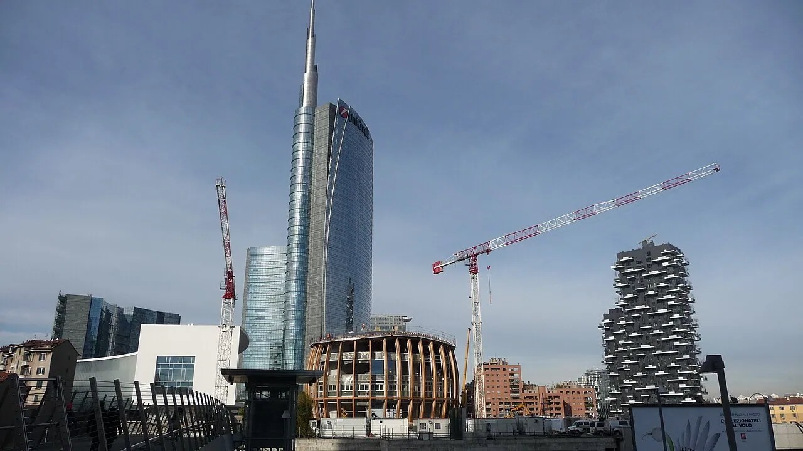

Photos unavailable1/2Drawing: Find Great Architecture · CC BY 4.0

2/2 · Context · La Torre Unicredit e il Bosco Verticale visti dal passaggio pedonale che collega la piazza Gae AulentiPhoto: Kokky92 · CC BY-SA 4.0 · source
The Bosco Verticale (Vertical Forest) is a complex of two residential skyscrapers designed by Boeri Studio (Stefano Boeri, Gianandrea Barreca, and Giovanni La Varra) and located in the Porta Nuova district of Milan, Italy. They have a height of 116 metres (381 ft) and 84 m (276 ft) and within the complex is an 11-story office building.
The Bosco Verticale consists of two towers, the De Castillia Tower (formerly Tower E) and the Confalonieri Tower (formerly Tower D), with heights of 110 and 76 meters (26 and 18 floors), respectively. They are connected by an L-shaped base. Both structures feature balconies made of reinforced concrete that protrude irregularly on all four sides of the buildings, with a projection of 3.25 meters. The staggered arrangement of the balconies not only adds dynamism to the profile of the Bosco Verticale but also allows the growth of trees up to nine meters tall. The inclusion of trees of such dimensions was not initially planned in the earlier versions of the project, which envisaged continuous strip balconies.
In metaphorical and conceptual terms, the Bosco Verticale can be compared to a large tree, where the balconies are the branches, the collection of plant species are the leaves, the central body of the building is the trunk, and the water supply systems are the roots.